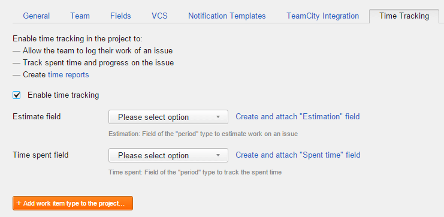

To enable time tracking in your project on YouTrack:
Click the
`Projects link`
in the main navigation.
Select the project where you want to enable time tracking.
Click the `Edit project` link.
Select the `Time Tracking` tab.
Select the `Enable time tracking` checkbox.
Additional settings for time tracking configuration are shown.

YouTrack checks for period-type fields with the names Estimation and Spent Time.
If these fields exist, you can select which field to use for estimations and time spent. If these field
are not currently attached to the project, they are added automatically.
If these fields do not exist, YouTrack asks you to create them.
For the Estimate field setting, select an existing field from the drop-down list or click the Create and
attach "Estimation" field link.
For the Time spent field setting, select an existing field from the drop-down list or click the Create and
attach "Spent time" field link. This field is converted to store a calculated value and can no longer be
updated manually. Values that are stored in this field are discarded.